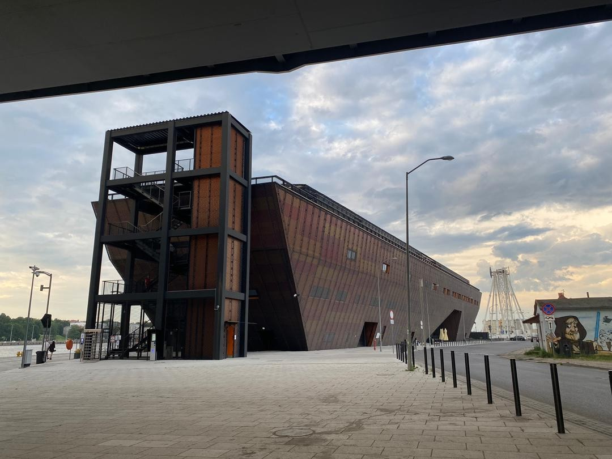
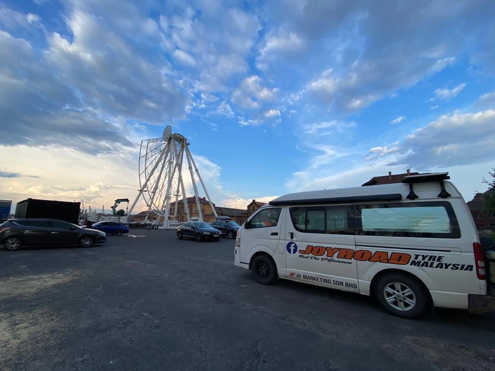
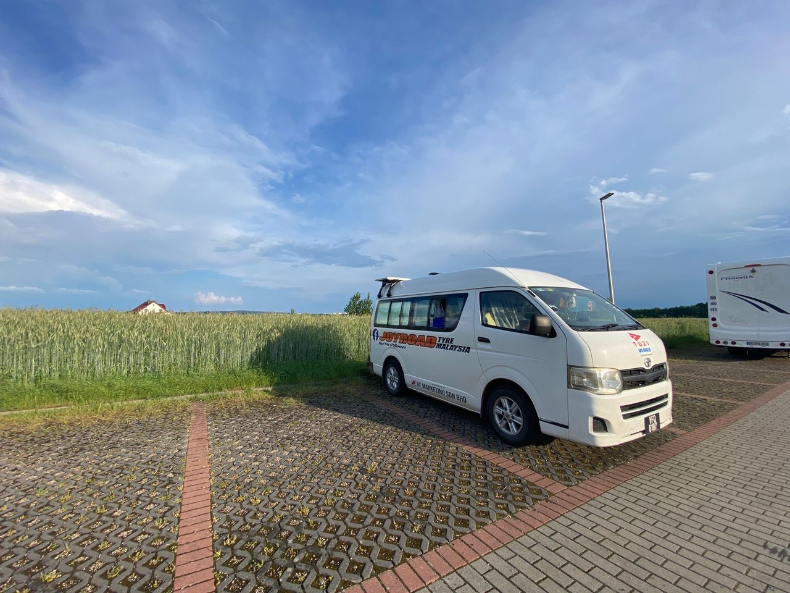
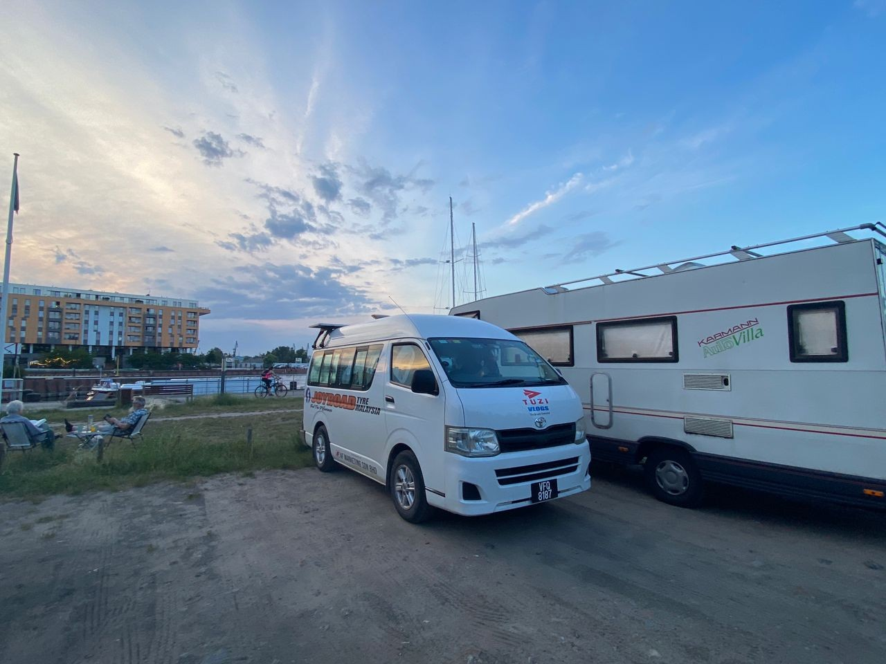
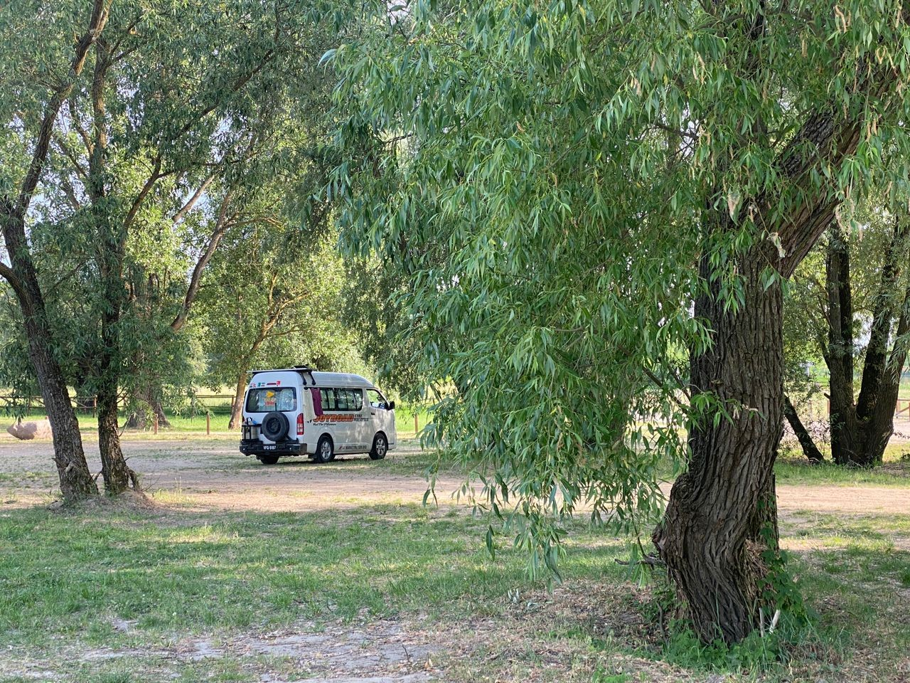

Real Story · 中文
25/5 — Szczecin port parking.
25 May 2024，我 overnight at Szczecin port parking。 回程进入 Poland 后，很多夜晚又开始变成 port parking、 free parking、park parking 和 campsite 的组合。


Creativity
请各位让小朋友看一下，什么是创意？
在 Szczecin，我停在一个平凡的停车位， 却看到不平凡的 Poland people 用创意去装饰他们的城市。
请各位让小朋友看一下，什么是创意？ 创意不是一定要很贵、很复杂、很 grand。 有时只是一个城市愿意把普通地方变得有想象力。
Route Anchors
26/5 to 29/5 — port parking, free parking, and campsite.
26 May 2024，我 overnight at Koszalin port parking。 27 May，我 overnight at Gdańsk port free parking。 28 May，我 overnight at Warsaw park free parking。 29 May，我 overnight at Drohiczyn campsite。
这些地名看起来像路线列表， 但对 road traveller 来说， 它们是每一天真正可以停下来睡觉的 anchor。



English Memory Summary
Poland’s return route became a chain of practical anchors.
From 25 to 29 May 2024, Tuzi moved through Poland’s return route: Szczecin port parking, Koszalin port parking, Gdańsk port free parking, Warsaw park free parking, and Drohiczyn campsite.
In Szczecin, an ordinary parking area also became a creativity lesson: Poland showed how a city can decorate everyday spaces with imagination.
Heart Statement
回程不是倒带，而是第二次看见。
Poland’s return route was practical — ports, parks, campsites — but even there, creativity appeared beside an ordinary parking space.